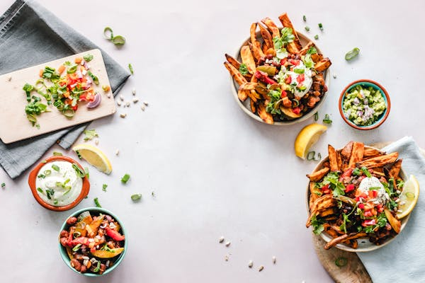

Indian Food

Chinese Food

Korean Food

Continental Food

Hungry-Bites
Hungry-bites
A pleasant and satisfying flavor that makes it enjoyable to eat.
It can be described as appetizing, delectable, or savory, and
may have a pronounced or strong taste.
Other words used to describe tasty food
include scrumptious, yummy, and luscious, highlighting its deliciousness.
To place order please contact us here........
For Online Order
Call us
Monday to Sunday from 9:00AM to 6:00 PM.
+91 7006277781
orders@restaurant.com
OR
Visit Our Restaurant
Hungry-bites
Monday to Sunday from 9am to 9pm.
Natipora,opposite Govt higher secondary school.
Follow Us On
©2025 Quarat Ul Qadir. All rights reserved.